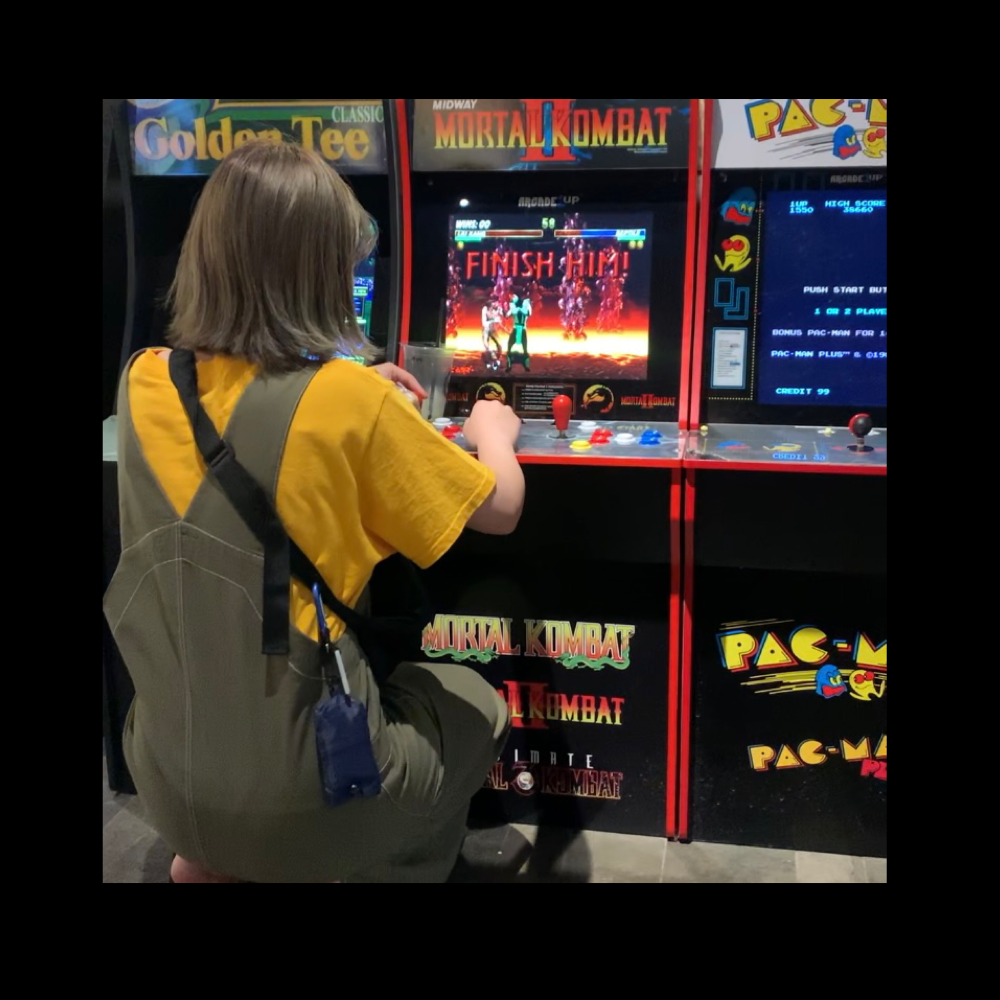

Everything starts
with an imagination.
Natsumi Kobayashi Portfolio site
このウェブサイトは筑波大学大学院生の小林夏美が運営する
自身の作品等を紹介するポートフォリオサイトです。
ABOUT

Natsumi Kobayashi
(tmc5)
システム情報を専攻している大学院生です。現在は音声に関する研究を行っています。ゲームやお絵描きや音楽が好きで、プレイしたり聞いたりするだけでなく、自分で創作することも好きです。バックエンドからフロントエンドまで幅広く興味があり、現在はwebデザインやwebアプリケーションについて勉強中です。
TIMELINE
2022
8月
中期インターン 株式会社 アカリ
フロントエンジニアとして３か月間の実務経験を積んでいます。
2022
Apr
筑波大学 大学院理工情報生命学術院
システム情報工学研究群 情報理工学位プログラム
機械学習アプローチによる感情音声のデータ拡張を行う研究
2020
Apr
国立群馬工業高等専門学校 専攻科 生産システム専攻
信号ベースのアプローチによる音声モーフィングの研究
2015
Apr
国立群馬工業高等専門学校 電子情報工学科
電子情報に関する基礎学問の習得
2013
Apr
玉村町立玉村中学校
資格・免許
| 2018.9 | 普通自動車運転 免許 |
|---|---|
| 2018.11 | 基本情報技術者試験 合格 |
| 2017.11 | ITパスポート 合格 |
| 2012 | 珠算準一級 合格 |
Paper
国際会議（査読あり）
[1] Natsumi Kobayashi, Shinichi Kawamoto, ``Voice Morphing with Smoothed Spectrum
Subtraction for Voice Manipulation,'' IEEE 10th Global Conference on Consumer Electronics(GCCE), pp. 410-411, 2021 Sep.
国内会議（査読なし）
[2]小林夏美, 川本真一, ``二話者混合音声の知覚に関する検討.'' 北陸地区学生のための研究発表会, pp.103, 2020 Mar.
RECENT WORK
-
校内冬季バレーボール大会 創設
2018～
これまでなかった校内冬季大会を創設しました。現在でも伝統として続いています。
-
ガスボンベ容器番号認識システムの構築
2020.10
企業との共同開発学内で班長を務め、学内発表で全７班のうち、最優秀賞に選ばれました。
-
目で見る科目：ロゴ
2021.11
「工業系科目」30科目をモチーフにロゴをデザインしました。
-
卒業ライブ
企画執行2020.3
企画・主催・執行を行いました。集客や告知など仲間と協力して行い大成功を納めました。
-
ポップおちょこ
2020.7
ポップでかわいいおちょこがあったら面白いなという発想から生まれました。